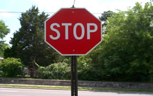

RecallingInertia

Inertia
Isaac Newton's key rule for motion in physics."An object in motion tends to stay in motion and an object at rest tends to stay at rest unless acted on by an external force." If its not already moving, it won't suddenly start moving until something acts on it. In this experiment, there just isn't enough force acting on the dishes for them to be jerked off the table if done properly.
Applying The Laws of Motion
Materials
- Table with flat surface
- Tablecloth
- Dishes, bowls, cups with flat surface (the heavier the better)
Procedure
To perform this experiment, lay a tablecloth on a table and smooth out the cloth, being sure to allow some of the cloth to hang over the ledge of the table. Next place dishes, bowls, or cups on top of the tablecloth. Finallu, grab the excess cloth and give it a quick tug downwards away from the table.
Observation
If done properly, the cloth will slide out from under the dishes, cups, and bowls with little movement of mom's fine china(don't use mom's fine china). With enough practice there will be no movement at all.
Explanation
This trick works using friction and inertia. Remember Newton's First Law? The dinnerware will want to stay still so by pulling on the table cloth, friction force will drag the object. This is why a heavier object makes this experiment easier, as it is affected less by friction. Pulling down quickly is effective because it decreases the time friction can act on the dinnerware.